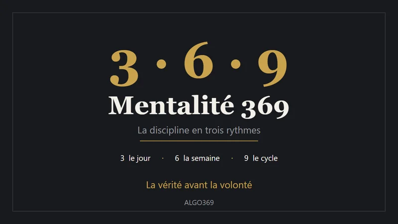
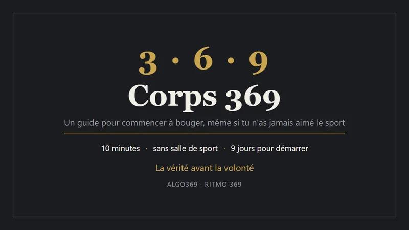

Commencer iciGuide « Mentalité 369 »
La méthode en trois rythmes (le jour, la semaine, le cycle), les quatre pièges et une page pour le mur.
PDF · 4 pagesCHF 9.–Acheter
Nous écrivons sur la maison, le bien-être et les petites décisions que l’on prend chaque jour.
Nous ne recommandons que ce que nous avons utilisé nous-mêmes ou ce que nous pouvons justifier. Quand nous ne savons pas quelque chose, nous le disons.
Ici ne figure que ce qui existe et peut être acheté maintenant. Quand il y aura davantage, cela apparaîtra ici – pas avant.
En français, il existe pour l’instant deux PDF : le guide Mentalité 369 et Corps 369. Livrés immédiatement via Gumroad. S’ils ne vous servent à rien, écrivez-nous et nous vous remboursons.

Commencer iciLa méthode en trois rythmes (le jour, la semaine, le cycle), les quatre pièges et une page pour le mur.
PDF · 4 pages
NouveauPour celles et ceux qui ne font pas de sport ou qui ont arrêté. 10 minutes par jour, sans salle de sport : un démarrage en 9 jours et un plan de 9 semaines, avec des fiches à imprimer.
PDF · 15 pagesTous les autres produits n’existent pour l’instant qu’en portugais. Vous les trouverez dans la boutique en portugais.
De longs textes, sans hâte, sur des choses qu’il vaut la peine de comprendre une bonne fois pour toutes.
Presque tous ceux qui achètent une monstera se posent la même question au bout de quelques mois : pourquoi les nouvelles feuilles sortent-elles sans aucun trou ? La réponse en dit long sur la plante – et sur l’endroit où vous l’avez placée.
Ces découpes s’appellent des fenestrations et ne sont ni un défaut ni une maladie. Il existe deux explications reconnues, et toutes deux tiennent à l’origine de la plante : le sol humide et ombragé des forêts tropicales du sud du Mexique, du Guatemala et du Panama. Là-bas, la monstera n’est pas une plante en pot, mais une plante grimpante qui s’agrippe aux troncs des arbres et pousse vers la lumière. Elle peut ainsi dépasser vingt mètres de haut.
La première explication, c’est la lumière. Sous une feuille immense et pleine, tout est dans l’ombre. Les trous laissent passer la lumière jusqu’aux feuilles inférieures de la même plante. La seconde, c’est le vent et la pluie : une feuille pleine d’ouvertures résiste à une tempête tropicale sans se déchirer.
D’où la partie pratique. Si votre monstera produit de petites feuilles fermées, c’est presque toujours pour l’une de deux raisons : trop peu de lumière ou rien pour grimper. Un tuteur en mousse change davantage l’aspect de la plante que n’importe quel engrais.
Et les racines aériennes qui sortent de la tige ne sont ni un problème ni de la saleté – c’est avec elles qu’elle s’accroche aux arbres. Vous pouvez les guider vers la terre du pot.
À propos du nom : Monstera vient du latin monstrum, à cause de la taille presque monstrueuse des feuilles. Deliciosa renvoie au fruit. Il est comestible et a un goût qui rappelle un mélange d’ananas et de banane – mais seulement quand il est bien mûr. Pas assez mûr, il irrite la bouche, à cause des cristaux d’oxalate de calcium. En appartement, la monstera ne donne pratiquement jamais de fruits.
C’est l’une des plantes les plus vendues au monde et l’une de celles qui meurent le plus souvent à la maison – presque toujours pour la même raison. Et cette raison est l’inverse de ce que l’on croit.
L’aloe vera vient de la péninsule Arabique, d’un terrain sec et caillouteux. Il est cultivé depuis si longtemps qu’on ne le trouve presque plus vraiment à l’état sauvage : il a voyagé avec les humains pendant des millénaires. Il apparaît sur des tablettes sumériennes datant d’environ 2100 av. J.-C. et dans le papyrus Ebers égyptien, vers 1550 av. J.-C., qui décrit des préparations médicinales.
Ses feuilles charnues sont une réserve. À l’intérieur, elles contiennent un gel composé presque uniquement d’eau – c’est ainsi que la plante survit des mois sans pluie. Ce même gel est utilisé depuis des siècles pour apaiser les coups de soleil et les petites irritations de la peau.
L’erreur la plus fréquente : le traiter comme les autres plantes d’intérieur – un arrosage par semaine, un bon terreau riche, un pot sans trou d’écoulement. Au bout de trois mois, les feuilles deviennent molles et translucides. Ce n’est pas la soif, c’est le contraire : les racines ont pourri.
Un conseil pratique que peu de gens connaissent : sous la peau verte se trouve une couche jaune, appelée latex ou aloïne, au goût très amer. Sur la peau, on applique le gel transparent du centre, pas cette couche.
Et l’histoire selon laquelle Cléopâtre l’aurait utilisé n’est que cela : une légende. Elle n’est pas attestée. Mais elle montre depuis combien de temps cette plante a une réputation.
C’est le chiffre affiché en grand sur l’emballage, et celui que presque tout le monde compare. C’est aussi celui qui en dit le moins.
Les watts mesurent la consommation, pas l’aspiration. Ce chiffre indique combien d’électricité l’appareil consomme, pas combien de travail il en tire. Un moteur mal conçu de 1200 W peut moins bien aspirer qu’un moteur bien conçu de 500 W – la différence se perd en chaleur et en bruit.
Depuis 2017, ce n’est plus de la théorie. Le règlement européen 666/2013 limite depuis lors les aspirateurs domestiques à 900 W. Beaucoup pensaient que les aspirateurs allaient devenir faibles. Ils ne le sont pas devenus : les fabricants ont dû améliorer la conception au lieu de grossir le moteur.
Les chiffres qui valent la peine d’être cherchés sont d’autres :
Air watts (AW) – mesure la puissance d’aspiration à la sortie, donc après les pertes dans le tube et la brosse. C’est ce qui se rapproche le plus de ce que vous sentez en aspirant. Sur les bons aspirateurs sans fil, elle se situe entre 100 et 250 AW.
Pascals (Pa) ou kPa – mesure la dépression que le moteur peut créer. Utile pour comparer, mais insuffisant à lui seul : beaucoup de dépression avec peu de débit d’air soulève la poussière fine et laisse le reste.
Débit d’air (litres par seconde) – c’est lui qui emporte les saletés plus grossières.
La puissance d’aspiration ne sert que si l’air passe. Un sac à moitié plein, un filtre encrassé ou un tube bouché font chuter les performances de n’importe quel appareil, quel que soit son prix. Nettoyer le filtre apporte plus que changer d’aspirateur – et c’est l’entretien que presque personne ne fait.
Un mot encore sur la comparaison entre appareils avec et sans fil : les aspirateurs sans fil modernes gagnent en confort et perdent en autonomie à la puissance maximale. Si le logement est grand, ce qui compte n’est pas la puissance d’aspiration maximale, mais combien de minutes l’appareil tient à ce niveau. C’est généralement bien moins que ce qui est indiqué, car l’indication se rapporte au niveau le plus faible.
« HEPA » est devenu une sorte de label de qualité et figure sur des produits qui n’ont rien à voir entre eux. Cela vaut la peine de savoir ce que le mot signifie, car sa définition est précise.
Un vrai filtre HEPA retient 99,97 % des particules de 0,3 micromètre. Ce chiffre n’a pas été choisi au hasard, et l’explication surprend presque tout le monde.
Cela paraît contradictoire, mais ne l’est pas. Les grosses particules heurtent les fibres et restent accrochées. Les très petites se déplacent de façon irrégulière (mouvement brownien) et finissent donc, elles aussi, par toucher une fibre. Les particules de 0,3 µm passent le mieux entre ces deux effets – c’est pourquoi on mesure le cas le plus défavorable à cette taille. Un filtre qui retient 99,97 % dans le cas le plus défavorable retient davantage dans tous les autres.
Deux pièges à l’achat :
« Type HEPA » ou « similaire à HEPA », ce n’est pas HEPA. Ces expressions n’ont pas de définition légale et peuvent figurer sur un filtre qui retient 85 %. Le mot qui compte est accompagné d’une norme – en Europe, la EN 1822, avec les classes à partir de H13.
Le filtre n’est pas l’appareil. Un bon filtre dans un purificateur d’air qui ne brasse presque pas d’air purifie peu. Ce qui compte, c’est le CADR (Clean Air Delivery Rate) en mètres cubes par heure : il indique combien d’air propre l’appareil fournit réellement. Une pièce de 20 m² avec une hauteur de plafond normale demande nettement plus de CADR que ce que l’emballage laisse généralement entendre.
Et ce qu’un filtre HEPA ne peut pas faire : éliminer les gaz et les odeurs. Il retient les particules de la fumée, mais l’odeur de fumée, les composés organiques volatils et l’odeur de peinture fraîche sont des gaz, pas des particules. Pour cela, il faut du charbon actif. C’est un autre filtre, et il s’use plus vite.
Si vous souffrez d’allergies, vous remarquerez la différence surtout dans la chambre et la nuit. Un bon appareil au bon endroit apporte plus qu’un appareil énorme dans le salon.
Certaines plantes meurent parce qu’on ne s’en occupe pas assez. La lavande meurt du contraire – et c’est pour cela que tant de gens abandonnent après le premier pot.
Elle pousse naturellement sur les pentes calcaires et sèches de l’ouest de la Méditerranée : en Provence, en Catalogne, dans les montagnes d’Italie. Une terre pauvre, beaucoup de cailloux, du soleil toute la journée. Les champs violets des photos sont cultivés, mais la plante vient bel et bien de là.
Tout le reste en découle. Une terre riche et humide la tue. En général, cela se passe ainsi : on achète une lavande, on la plante dans un bon terreau sombre en sac et on l’arrose deux fois par semaine comme les autres – et au bout de deux mois, elle grisonne au centre et ne s’en remet plus. Ce n’était pas la soif, mais la pourriture des racines.
Quant au parfum : il provient d’huiles essentielles contenues dans de minuscules poils à la surface des feuilles et des fleurs. Pour la plante, ce n’est pas un parfum, mais une protection contre les insectes et la chaleur. Quand vous frottez les feuilles entre vos doigts, ces poils éclatent – c’est pourquoi l’odeur reste sur les mains.
Le nom révèle aussi à quoi elle servait : il remonte au latin lavare, laver. Les Romains mettaient de la lavande dans l’eau du bain et dans le linge. Le geste est resté dans le nom jusqu’à aujourd’hui.
Un point pratique qui, au bout de quelques années, change l’aspect de la plante : la tailler après la floraison, mais pas jusqu’au vieux bois. Sans cette taille, la lavande se lignifie par le bas et devient clairsemée, et il n’y a plus rien à faire.
Et si vous avez un balcon : une seule plante change le nombre d’abeilles qui passent. C’est d’ailleurs pour cela que le miel de lavande a son goût bien à lui.
La plupart des plantes d’intérieur qui meurent ne meurent pas de soif. Elles meurent d’un excès d’eau – et presque toujours parce que quelqu’un a décidé d’arroser « toujours le mercredi ».
Le problème du calendrier : la plante ne vit pas selon le calendrier. La même plante boit beaucoup plus en juillet avec la fenêtre ouverte qu’en janvier avec le chauffage allumé et des journées courtes. Arroser toujours de la même façon, c’est avoir raison la moitié de l’année et tort l’autre moitié.
C’est simple et cela marche pour la plupart des plantes d’intérieur. Deux exceptions à connaître :
Succulentes, aloès et cactus – attendez que la terre soit complètement sèche, pas seulement en surface. En hiver, plusieurs semaines peuvent passer sans eau.
Fougères et plantes à feuillage fin – elles veulent une terre toujours légèrement humide, mais jamais les pieds dans l’eau.
Les signes d’un excès d’eau : feuilles jaunes et molles, terre qui sent le moisi, petits moucherons autour du pot. Les signes d’un manque d’eau : feuilles flasques mais encore fermes, terre qui se décolle du bord du pot.
On confond souvent les deux, parce que les feuilles pendent dans les deux cas. La différence se sent au toucher : flasques et molles, c’est trop d’eau ; flasques et sèches, c’est trop peu.
Et le plus important, qui n’a rien à voir avec l’arrosage : le pot doit avoir un trou d’écoulement. Un pot décoratif sans évacuation transforme chaque arrosage correct en eau stagnante au pied des racines. Si le pot vous plaît, utilisez-le comme cache-pot – la plante reste dans son pot en plastique percé et se glisse dedans.
Nous les écrivons ici pour que l’on puisse nous juger à leur aune.
Nous ne disons pas que quelque chose va changer votre vie. Nous décrivons ce que c’est, à quoi cela sert et où cela échoue.
Quand nous n’avons pas testé quelque chose, nous écrivons que nous ne l’avons pas testé. Quand il s’agit d’une légende et non d’un fait, c’est écrit aussi.
Si un jour nous touchons une commission sur un lien, ce sera indiqué sur la même page, en termes simples.
Nous ne publions ni codes de réduction, ni comptes à rebours, ni offres qui expirent. Cela fait vendre, mais cela n’informe pas.
Suggestions de sujets, corrections ou demandes – nous répondons à tout ce qui a été écrit par une personne.